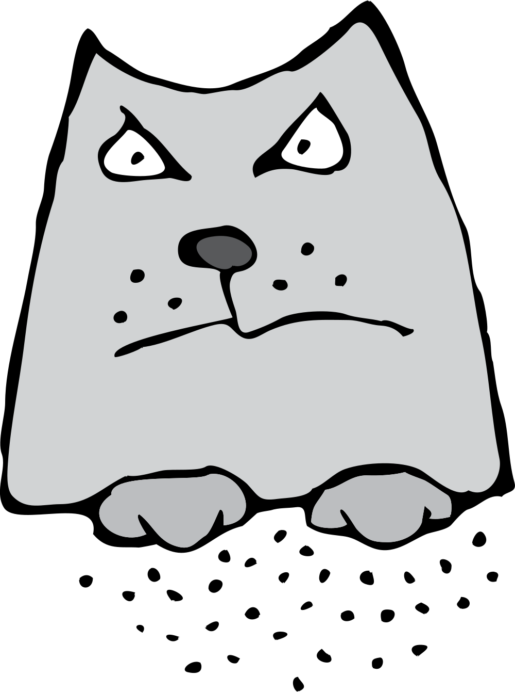
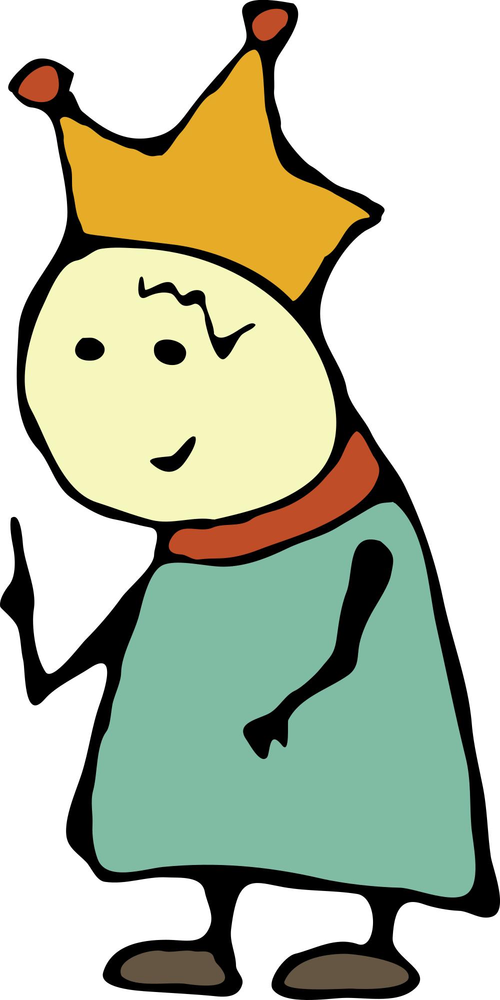
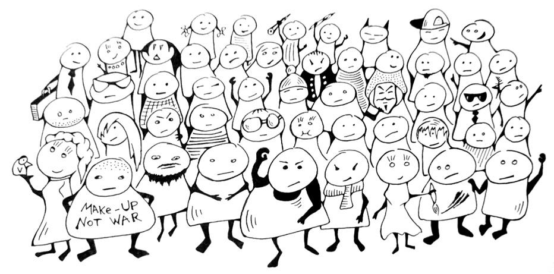
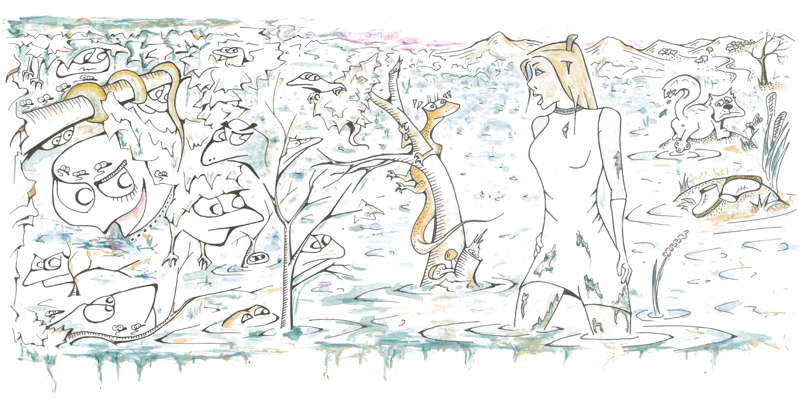

Пройдя сквозь гиперссылку кот не спеша уселся перед королём. Занял достойную позу и посмотрел пристальнее обычного.
Есть очень важное задание, — рассказал кот. — Я буду смотреть на тебя, а ты должен помогать. ТЭЗЭ уже составлено, нужен взгляд специалиста.
ТЭЗЭ
Задача: достать Модель DNA со дна озера
Озеро: рядом
Модель DNA: на дне
Варианты решений: В воду я точно не полезу. Можно откачать воду из озера, но оно большое. Надо построить резервуар достаточного размера, чтобы хранить там откачанную воду, пока я сбегаю за моделью. Если не получится откачать, тогда есть инженерное решение — труба широкая и длинная. Чтобы от поверхности озера достала до самого дна. Ты ведь сможешь придумать ступеньки внутри трубы? Чтобы я смог спуститься — это легко, я ловкий. Сделай чертёж и найди кого-нибудь, кто изготавливает трубы. Мой размер ты видишь, надо такого диаметра, чтобы я пролез... и вылез вместе с моделью. Она побольше меня будет в два или в три раза. Я не знаю точно, поэтому сделай размер с запасом. Все расходы, разумеется, беру на себя. Только запланируй затраты наперёд, — если будет дороже, чем аренда подводной лодки, тогда нет смысла придумывать велосипед. У меня товарищ по хорошей цене может предложить батискаф. Я уже ходил на нём в море и умею управлять. Был бы сейчас такой, в вмиг бы задачу выполнил. Тебя обязательно взял бы с собой, чтобы показать удивительный подводный мир. Жаль, что товарищ далеко от озера живёт. В батискафе хватило бы места нам обоим, даже с моделью. Кстати! Можем именно так отпразновать после выполнения миссии. Достанем модель дна и отправимся на дно :) Креативный план!
Сроки: желательно до четверга, плюс-минус пятница

Почему ты дёргаешься?, — спросил кот.
Король на самом деле подёргивался от смеха, читая описание задачи. После вопроса он прекратил и извинился.
Прошу прощения, меня повеселило слово тэзэ, — объяснил король. — Очень смешно звучит, словно муха назойливая жужжит в поисках выхода. И всё в целом тоже очень смешно, да. Что ты от меня хочешь?

ТЗ — это сокращение от Технического Задания. В нём описывают что должно быть сделано. Почитай тэзэ и назови точные сроки в часах. После обсуждения подпишем контракт на миссию, с меня благодарность и всё остальное.
— Ты сейчас серьёзно? Какой контракт, ты же кот?
Король Апп не до конца понимал намерения собеседника. Но кот был настроен решительно и продолжал смотреть.
Я всё ещё смотрю на тебя, а ты ничем не помогаешь.
Смотреть на меня, это изощрённая пытка или награда?
Это эффективный метод. Я поделюсь формулой успеха для достижения цели — всегда смотреть прямо в цель. Вот конкретный пример: в начале XXI века, жил Никита Апофеоз — известный радиоведущий и блогер. Я лично у него под окнами каждый день сидел и смотрел, чтобы он меня сфотографировал и в блог выложил. В блоге появилась куча комментариев, одни спрашивали почему кот смотрит, другие придумывали варианты ответов. Самые разные, вплоть до идей заговора и инопланетного вторжения. И никто не мог догадаться, что я просто смотрю. Только я об этом знал. Позвал даже других котов на следующий день, чтобы вместе смотреть. Это была абсолютная победа!
Король и кот вместе спустились к берегу большого озера.
Спасение модели DNA
Берег у озера заканчивался обрывом высотой в несколько метров.
Вода чистая, можно увидеть где лежит модель, — начал рассказывать кот. — Как думаешь, если через трубу...
Король Апп посмотрел на дно озера и немедленно прыгнул в воду с криком «Это же ребёнок!». Вытащил и положил на лужайку девочку, она не двигалась и её глаза были закрыты.
Прежде чем что-либо предпринять, король Апп воспользовался методом кота — просто посмотрел. Это была светловолосая девочка в летнем платье и длинных перчатках. Из под платья выглядывали босые ноги, а обеими руками девочка крепко прижимала тапочки к груди. Казалось, что модель крепко спит и собирается спать до обеда.
Рис. 6. Положение модели DNA и кота до обеда.
Если до обеда, значит для спасения требуется немедленно приступить к приготовлению еды. Король Апп начал собирать ветки для костра, демонстративно приглашая кота помочь. А вслух спросил:
Зачем она тебе нужна?
Хочу чтобы была моей покорной служанкой. Чтобы кормила и убирала за мной целую жизнь.
Кот тщательно обнюхал своё приобретение. Девочка всё так же лежала без движения, сжимая тапочки. Кот потрогал лапой мокрые волосы и облизнул кончик носа. От прикосновений девочка проснулась, через 250 милисекунд кот попал в объятия девочки вместо тапочек.
Сама же девочка разразилась громким восторгом: Какой милый котик!
С этого момента я буду твоей хозяйкой. Буду кормить и обнимать тебя целую жизнь.
Кот весь напрягся от поворота событий. Но, поскольку девочка не выпускала и не переставала гладить, кот смирился и громко замурлыкал.
Как тебя зовут?, — спросила девочка.Меня зовут Берppгамот. Я не котик, я брppаузер.
Король Апп тоже представился и спросил, всё ли в порядке у девочки? И хорошо ли она себя чувствует?
Девочка отпустила кота и подумала. У неё ничего не болит. И ей никуда не надо в спешке собираться. Всё кажется в порядке, но нет восторга.
Подошла к озеру, чтобы посмотреть на отражение в воде. Долго причесывала непослушные волосы руками.
Нет, со мной не всё в порядке. Мои волосы неправильные.
Король Апп снял с головы золотую корону и отломал кусочек металла. Согнул в нескольких местах и смастерил красивую заколку, которую протянул девочке. Та приняла подарок с удивлёнными глазами.
Это так мило, спасибо! Она золотая? Я обязательно продам. С волосами мне поможет что-нибудь попроще...
Девочка высмотрела на замле сухой корешок и заплела в волосы, чтобы не падали на глаза. Королевскую заколку прицепила к платью, как брошку.
Рис. 7. Модель DNA схематично показана вместе с заколкой, корешком, перчатками и тапочками.
Пока девочка приводила себя в порядок, король Апп успел разжечь небольшой костер и сварить в перевёрнутой короне горсть гречки из кармана. Пока крупа готовилась, король раскопал песок на берегу и нашёл кладку консервов — пару банок король добавил в гречку.
NB: Самка тунца часто закапывает свои консервы поблизости от водоёма, чтобы уберечь от хищников.
Обедали все вместе прямо из короны. А насытившись, остались отдыхать на берегу озера. Бергамот и девочка гонялись за бабочками, король же от усталости погрузился в крепкий сон.
Рис. 8. Анализ процессов во время послеобеденного отдыха.
Девочка заинтересовалась схемами.
«Почему вы подписаны именами, а про меня написано «девочка»?, — спросила девочка. — Мне так не нравится.»
«Моментально поменяем, — согласился король Апп. — Дай своё имя, я заменю девочку.»
Девочка замешкалась. У неё не оказалось имени.
Кот подошёл проверить и тщательно обнюхать, но сразу чихнул:
Андефайнед!
undefined
И немедленно создал миссию...
Имя для девочки
Задача: найти имя для девочки
Варианты решений: Хорошие имена водятся в карбонских болотах неподалёку. Там много других примитивов и в целом — слякоть. Фу, отвратительное место. В такие места надо сапоги носить. Но имена отменные получаются! Вы слушали Элеонору Рузвельт? Чудесно, не правда ли? Чувствуется лёгкий аромат позднего карбона. Надо идти брать, пока есть.
Сроки: до ужина
А можно как-нибудь проще? Не хочу в тапочках гулять по болоту, — запротестовала девочка.Есть другие варианты как найти имя?, — спросил король.
Других вариантов никто не смог придумать. Девочка, кот и король Апп отправились к Карбонским болотам.
Карбонские болота
Карбон — второе название каменноугольного периода в истории Земли. В те годы ещё не появились динозавры, но уже обитали разнообразные амфибии и рептилии. Суша была покрыта тёплыми болотами и хвойными лесами. Старые деревья опускались в илистое дно и медленно превращались в каменный уголь, который через триста миллионов лет будут откапывать шахтёры.
300 миллионов лет назад
Тропинка ведущая к болотам становилась всё меньше, пока совсем не растворилась в лужах с зелёной ряской. Ещё дальше, лужи превращались в одно большое болото до самого горизонта.
Здесь живут примитивы: Були, Инты, Стринги и другие племена. Выглядят как ящерицы самых разных форм и размеров. Из всех прочих, нам нужна небольшая ящерка Стринг, она умеет запоминать имя и хранить его вечно...
А вот огромный хищный Массив нам сейчас не нужен!
Король Апп указал на огромную рептилию в глубине болот — размером с многоэтажный дом.
Поэтому меняем планы. В болото не лезем, сначала нам нужна армия. Для этого вернёмся в горы и найдём деревню с местными жителями...
Девочке совсем не понравились новые сложности. Не хотелось возвращаться наверх, потом снова спускаться к этому болоту. И не хотелось знакомиться с деревенскими жителями без имени.
Нам нужна армия?, — спросила девочка.Определённо да! Отряд из пятидесяти дизайнеров, чтобы отогнать Массив.Почему пятидесяти?Для гарантированного эффекта. Представь пятьдесят дизайнеров, бегущих на тебя с криком «Сейчас всё поправлю!». Такая сила способна прогнать рептилию размером с Ост-Индийскую компанию.

Девочка представила и спросила:
Можно я пойду вместо армии?
Король Апп согласился. Действительно, существует же, не нулевой шанс, что маленькая девочка может выполнить взрослую миссию. И даже сможет заменить пол-сотни обученных солдат. Но результата сложно достичь без приёма Рояль-в-Кустах, — так называют искусственный поворот сюжета, плохо замаскированный под случайность. Это очень скучный приём.
Поэтому, нет. Король Апп не согласился.
«А если я повзрослею?, — предложила девочка».
«Вот это будет намного интереснее».
Девочка повернулась к болотам и закрыла глаза...
Уже стало настолько интересно, что ящерки подползли к берегу и наблюдали за происходящим. Внешне ничего не менялось. Через несколько секунд девочка открыла глаза и посмотрела на столпившихся ящерок.
«Вы повзрослели?, — осторожно поинтересовалась одна ящерка».
«Да, — ответила девочка».
Ящерки оживились и бросились задавать много вопросов:
Что поменялось?
Как вы к этому пришли?
А почему внешне не изменились?
Почему продолжают писать «девочка», если вы повзрослели?
Можете сказать что-нибудь умное?
Девочка улыбнулась и постаралась разом ответить на все вопросы:
Я просто повзрослела. Изменила своё отношение к вам и стала по другому себя вести. А девочкой меня называют, потому что нет другого имени, кроме девочка или Модель Дна...
«Ещё один вопрос, пожалуйста, спасибо! Каким конкретно образом вы собираетесь одолеть меня, размером с небольшой филиал страховой компании? Есть сдвиги в этом направлении?»
Это прошипел огромный Массив, который к этому времени успел подползти к общей конференции на тему взросления.
«Пятьдесят дизайнеров!, — закричал король Апп и выхватил меч».
Девочка прикоснулась к плечу короля, прося разрешение на ответ. Затем обратилась к Массиву с вежливым поклоном.
«Сдвиги есть. И есть взаимовыгодное предложение: вы расскажете лекцию о примитивах, кто вы такие, зачем вы здесь, какая ваша история? Мы внимательно выслушаем, за это вы позволите забрать одну ящерку.»
Ящерки одобрительно зашипели и Массив принял предложение.
Данные — осколки информации для удобного хранения. Данные можно передавать или обрабатывать.
Простые типы данных (примитивы)
Були (boolean) — либо «да», либо «нет»
Нули (null) — нет данных, нет информации, ничего нет
Анды Файнеды (undefined) — данных всё еще нет, но хотя-бы понятно, где их ждать
Стринги (string) — "текст внутри кавычек"
Намберы (number) — состоят из цифр, обозначают числа
Большие Намберы (bigint) — если обычные намберы не справляются
Непростые типы данных
Массив (array) — цепочка из других ...
Вот в этом месте уже стало скучно и непонятно. Девочка решила, что обязательно послушает в другой раз и полезла в болото, пока остальные были заняты лекцией...

Рис. 10. Модель DNA находит имя в Карбонских болотах
На ветках ближайшего куста сидела небольшая ящерка. По краям глаз у ящерки висели небольшие кавычки из солнечного света, похожие на большие ресницы. Девочка застыла от умиления разглядывая ящерку.
«Какая красивая!, — прошептала девочка и посадила ящерку к себе на плечо. — Ты будешь хранить красивое имя — Шонталь.»
Ящерка тоже с интересом рассматривала девочку и думала:
Бедняжка. Такая хорошенькая, а уже растеряла свои кавычки. Только одна осталась — заколка в волосах. Позабочусь о бедной сиротке.
DnaModel = {
name: "Шонталь"
}
...теперь понятно, почему примитивы иммутабельны и никогда не хотят менять своих привычек.
Лекция окончена. Всем спасибо.
"Шонталь"
Всю обратную дорогу Шонталь не могла нарадоваться новому имени и знакомилась с каждым встречным:
Здравствуйте, меня зовут Шонталь! Добавьте меня в свою контактную книжку.
Но, позвольте, — возразил один встречный, — ваше имя не Шонталь, а Чик-Чирик
«Какой ещё Чик-Чирик? Почему?, — удивилась Чик-Чирик».
Встречный пожал плечами и указал на ящерку. Вместо ожидаемого имени совсем другое слово было в кавычках:
"Чик-Чирик"
Ещё через мгновение, имя вновь поменялось:
"Слоник прыгает в лавандовых полях"
«Как же так?, — огорчилась Слоник прыгает в лавандовых полях, — неужели моё красивое имя пропало? И как теперь жить, если имя меняется каждую секунду?»
"Не расстраивайся"
Не расстраивайся расстроилась и обратилась к королю за помощью. Король Апп внимательно осмотрел ящерку, проверил кавычки с обеих сторон, но не понял в чём дело. Только шаманские танцы с бубном помогут разобраться.
Король сделал бубен из королевской короны — натянул нитки и прикрепил бубенцы из сухих семян. Бубен звучал негромко, но для шаманских танцев сойдёт. Посадил ящерку на камень и долго танцевал кругами, пока не появилась радуга — в этом и заключается секрет танцев с бубнов.
По радуге, с весёлыми криками и звонким хохотом, вниз скатились две старушки. Увидели ящерку и засмеялись ещё громче:
Ха-ха, знакомый пациент. С чем у вас играется? С именами? Вам ещё повезло, в прошлом году ей доверили пароль от вай-фая, вот это был конфуз! Меня зовут Сетера, это моя сестра Гетера. Мы справляемся с такими ящерками на раз-два.
Старушка Сетера запрыгнула на камень на счёт раз, и бесцеремонно села на ящерку на счёт два. Ящерка отчаянно сопротивлялась, но выбраться из под старушки не было шансов.
"Отпусти меня старая ведьма"
«Чем беспокоит?», — спросила старушка у Отпусти меня старая... спросила у девочки, лучше так продолжим её называть пока ящерка не образумится... Девочка попросила, чтобы ящерка не меняла имя «Шонталь» ни на что другое, а то совсем неудобно.
Старушка пообещала сделать «Шонталь» константой — так называют неизменяемое значение — и слегка надавила на ящерку. Ящерка сперва поддалась давлению:
"Шонталь"
Но через пару секунд, ящерка взбунтовалась.
"Немедленно отпусти"
"Я"
"Никогда"
"Не буду"
"Работать"
"По вашим"
"Скучным"
"Правилам"
"Отпустите, пожалуйста!"
Тут, думаю, сложный случай, — сказала старушка и отпустила ящерку, — только сестра поможет.
Сестра Гетера всё это время танцевала с бабочками в лучах радуги. Услышав своё имя, подошла к ящерке, подняла на руки и нежно поцеловала в нос.
"Константа"
Вы же хотели Константу?, — спросила старушка Гетера и вернулась к танцам не дожидаясь ответа.
DnaModel = {
name: "Вы меня не остановите!",
get name() {
return "Константа"
}
}
Константе понравилось имя «Константа», пусть не похоже на прежнее, но не менее красивое.
Ящерка тоже успокоилась. Теперь она могла что угодно писать в своих кавычках, и её никто не попрекал.
Старушки Гетера и Сетера попрощались, схватились за радугу и вместе с ней улетели в небо.
Король Апп запечатлел момент высекая надпись на камне:
Теперь меня называют по имени, — обрадовалась Константа. — можно идти в деревню.